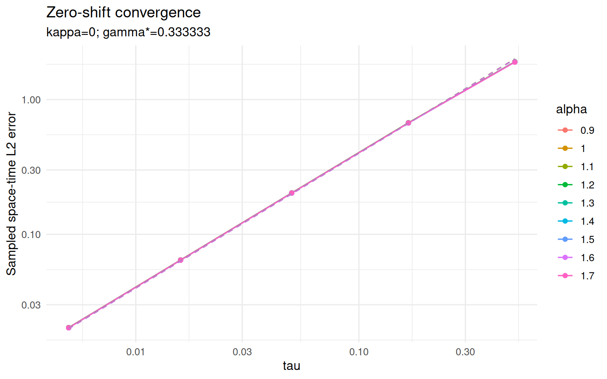

Zero-shift theory · m · h · tau · rough_h · Benchmark
This is a parallel experiment using the zero-shift construction in
kappa0func.Rmd. It leaves the original four positive-shift
notebooks unchanged. The equation is \[
u_t+\nu(-\Delta_\Gamma)^{\alpha/2}u=f,\qquad\kappa=0,
\] on the connected tadpole with stem length 1 and loop length 2,
with continuity and Kirchhoff conditions. The fixed geometric gap scale
is \(\gamma_*=2/(3\cdot2)=1/3\). It is
independent of \(h\) and \(\tau\) and introduces no reaction or decay
of the constant mode.
The aim is to carry out the smooth and rough convergence studies in
main.tex, Section “Numerical experiments”, for the
unshifted operator. The zero-shift treatment follows
eq:gamma-scale, eq:discrete-means,
eq:rational-centered-scheme, and
thenumericalscheme in
Numerical_fractional_diffusion_IMAJNA_kappa0.tex. Both
manuscripts are in
/home/rierasl/Desktop/6ac76d140751a76e98ae4d0b.
The necessary operator changes are \(L=G\), an exact zero constant eigenvalue, a
positive normalization scale \(\gamma_*=1/3\) in place of \(\kappa^2\), and the separate mean update.
The convergence data retain their zero mean; no constants are added to
the initial condition or forcing. The separate nonzero-mean benchmark in
the revised paper is a different experiment and is not substituted for
these convergence studies. Meshes, time grids, error norms, and
approximation orders are explicit below; numerical parameter adjustments
must be justified by zero-shift error-budget checks. Internal
diagnostics belong to DOCS/NAP, outside this report.
The computed zero-shift errors and slopes are new results for the
unshifted equation. They are not expected to equal the positive-shift
numbers in main.tex, because the modal rates change from
\(\nu(\mu_j+16)^{\alpha/2}\) to \(\nu\mu_j^{\alpha/2}\).
This notebook follows the original experiment workflow. All full-run parameters are explicit in the parameter chunk below. There are no validation profiles or global options that select a different experiment.
true_diff_conv_in_tau_mat_paper.rds.Use the R installation containing rSPDE,
Matrix, Rcpp, and RcppEigen for
computation (for example /usr/bin/Rscript). Knitting needs
the reporting packages only. Internal implementation tests and
refinement studies are kept separately in
/home/rierasl/Desktop/DOCS/NAP/true_diff_internal.
knitr::opts_chunk$set(message=FALSE,warning=TRUE,error=FALSE,cache=FALSE,
dev="png",fig.width=8,fig.height=5)
if (!requireNamespace("ggplot2",quietly=TRUE)) stop("Install ggplot2 to render the plots.")These are the full experiment settings. Edit them here before running
the computation. workers controls execution only; it does
not change the mathematical problem. The _paper filename
suffix is retained for compatibility with previously generated full-run
results.
T_final <- 1
kappa <- 0
gamma_star <- 1/3
alpha_vector <- seq(0.9,1.7,0.1)
diffusion <- 1e-3
h_fixed <- 1e-3
tau_vector <- T_final/c(200L,63L,20L,6L,2L)
m_fixed <- 8L
overkill_h <- 1e-5
overkill_time_step <- 1e-5
workers <- 9L
K <- 16L
initial_modes <- c(5L,6L,8:21)
initial_amplitude <- 10
forcing_amplitude <- 10
initial_mean <- 0
forcing_mean <- 0
AAA <- 1
OMEGA <- pi
stopifnot(length(initial_modes)==K,!(7L %in% initial_modes))
output_file <- "data_files/true_diff_conv_in_tau_mat_paper.rds"
# Bundle only the visible parameters above for the shared runner.
settings <- list(study="tau",T_final=T_final,kappa=kappa,gamma_star=gamma_star,
alpha=alpha_vector,diffusion=diffusion,workers=workers,initial_modes=initial_modes,
initial_amplitude=initial_amplitude,forcing_amplitude=forcing_amplitude,
initial_mean=initial_mean,forcing_mean=forcing_mean,A=AAA,omega=OMEGA,h=h_fixed,tau=tau_vector,m=m_fixed,
reference_h=overkill_h,reference_tau=overkill_time_step)
settings_table <- data.frame(parameter=names(settings),
value=vapply(settings,function(x) paste(x,collapse=", "),character(1)))
knitr::kable(settings_table)| parameter | value | |
|---|---|---|
| study | study | tau |
| T_final | T_final | 1 |
| kappa | kappa | 0 |
| gamma_star | gamma_star | 0.333333333333333 |
| alpha | alpha | 0.9, 1, 1.1, 1.2, 1.3, 1.4, 1.5, 1.6, 1.7 |
| diffusion | diffusion | 0.001 |
| workers | workers | 9 |
| initial_modes | initial_modes | 5, 6, 8, 9, 10, 11, 12, 13, 14, 15, 16, 17, 18, 19, 20, 21 |
| initial_amplitude | initial_amplitude | 10 |
| forcing_amplitude | forcing_amplitude | 10 |
| initial_mean | initial_mean | 0 |
| forcing_mean | forcing_mean | 0 |
| A | A | 1 |
| omega | omega | 3.14159265358979 |
| h | h | 0.001 |
| tau | tau | 0.005, 0.0158730158730159, 0.05, 0.166666666666667, 0.5 |
| m | m | 8 |
| reference_h | reference_h | 1e-05 |
| reference_tau | reference_tau | 1e-05 |
Keep the original smooth experiment’s normalized eigenfunctions, with
\(\mathcal J=\{5,6,8,\ldots,21\}\),
\(K=16\), and use \[
u_0=\frac{a_0}{\sqrt K}\sum_{j\in\mathcal J}e_j,
\qquad f(s,t)=a_f A\sin(\omega t)e_7(s).
\] As in main.tex, \(a_0=a_f=10\), \(A=1\), \(\omega=\pi\), and both spatial means are
zero. Thus \(\|u_0\|_{L_2}=10\) and
\(M(t)=0\). The visible
initial_mean and forcing_mean parameters are
both zero; they must remain zero for this mean-zero convergence
experiment. The general solver still handles its constant mode exactly,
including any roundoff residual. Nonzero-mean tests are kept separately
in DOCS/NAP.
The mode table is defined in kappa0_mode_table(): \(e_1=1/\sqrt3\), \(e_5=\phi_3\), \(e_7=\psi_4\), with unshifted eigenvalues
\(\mu_j=(k_j\pi/2)^2\). For a positive
mode and \(d_j=\nu\mu_j^{\alpha/2}\),
its exact coefficient is \[
a_j(t)=a_j(0)e^{-d_jt}+b_jA
\int_0^t e^{-d_j(t-s)}\sin(\omega s)\,ds.
\] kappa0_decayed_sine_convolution() evaluates the
convolution stably near \(t=0\). The
reference retains exactly the 17 active positive modes and has no
constant component. Continuous eigenfunctions are used to specify data
and evaluate the reference, not as a truncation of the numerical
solver.
kappa0_smooth_data() assembles sine/cosine-hat loads
analytically and solves the consistent mass system for \(P_hu_0\). The time forcing uses its exact
interval average, evaluated with a midpoint-sinc formula. At each step
the solver forms \[
v=CU^k+\tau F_{\rm sine}\overline g_{k+1},
\quad q=\mathbf1^Tv/3,\quad b=v-qC\mathbf1.
\] It applies the cached sparse rational update to \(b\) and returns the centered coefficients
plus \(q\mathbf1\). The mean recurrence
and its code mapping are documented in Section 4.1 of
kappa0func.Rmd.
For \(t\in(t_{k-1},t_k]\), use the
right-constant reconstruction \(\widetilde
U(t)=U^k\). On a fixed reference mesh with consistent mass \(C_\star\), let \(\Psi\) evaluate the solver hats at
reference nodes. The reported quantity is \[
E^2=\tau_\star\sum_{\ell=1}^{N_\star}
[u_{\rm ref}(t_\ell^\star)-\Psi U^{k(\ell)}]^T C_\star
[u_{\rm ref}(t_\ell^\star)-\Psi U^{k(\ell)}],
\quad t_\ell^\star\in(t_{k(\ell)-1},t_{k(\ell)}].
\] This is the same sampled norm as the original notebook. The
reference is evaluated analytically; no fine-grid reference PDE is
solved. kappa0_prepare_reference_error() compresses this
quadratic form into its coarse metric, reference projection, and
residual Gram matrix. The compiled kernel groups coefficient samples
belonging to the same solver interval and accumulates their weighted
means and centered scatter. This computes the sampled sum without
storing all reference vectors or subtracting nearly equal norm squares.
It is not exact continuum integration in space or time.
Every solver step is advanced. Mass is checked at every step, not only at reference samples. The exact constant component is zero, so there is no added uniform forcing or constant-mode reconstruction error. The positive-mode temporal reconstruction error remains part of this space-time norm. Spatial and temporal reference refinement, rational-order refinement, and solver-time refinement should be used when errors approach a floor; implementation agreement alone does not certify these separate discretization budgets.
Vary \(\tau=T/N\) with \(N\in\{200,63,20,6,2\}\) while fixing \(h\) and \(m\). Backward Euler has reference slope 1,
so fit \(\log E=s_\tau\log\tau+b\). The
full experiment uses \(h=10^{-3}\),
\(\nu=10^{-3}\) and reference
resolutions \(10^{-5}\), with rational
order 8, as in main.tex. At the smallest tau and the tested
endpoint exponents 0.9 and 1.7, changing order 8 to order 14 changed the
measured error by at most 0.003%. The internal comparison is in
DOCS/NAP/true_diff_internal/mean_zero_order_audit.csv. The
settings are printed above; positive-shift saved errors are never
loaded.
For each time grid, recompute the exact interval forcing averages and all time-step poles, residues, and shifted factorizations. Their strength is \(\tau\nu\gamma_*^{\alpha/2}\), so an operator cached for another \(\tau\) cannot be reused. The sampled continuum comparison includes the right-constant reconstruction error. Both exact and discrete spatial means are zero (up to roundoff); no increasing uniform mean is added to the temporal error. It is therefore different from the paper’s independent final-time comparison with exact semidiscrete evolution.
Run this chunk manually after the setup and parameters.
eval=FALSE prevents it from running when knitting. This
explicit action computes the experiment and overwrites only the named
full-run result file. It does not run internal implementation tests or
refinement studies.
for (package in c("Matrix","rSPDE","Rcpp","RcppEigen"))
if (!requireNamespace(package,quietly=TRUE)) stop("Missing package: ",package)
true_diff <- local({
extracted <- tempfile("true_diff_functions_",fileext=".R")
on.exit(unlink(extracted),add=TRUE)
knitr::purl("kappa0func.Rmd",output=extracted,quiet=TRUE,documentation=0L)
functions <- new.env(parent=globalenv())
sys.source(extracted,envir=functions)
functions
})
result <- true_diff$kappa0_compute_study(settings,"true_diff_conv_in_tau_mat.Rmd",output_file)This is the only experiment-data action taken while knitting. Check the saved scientific parameters against the visible settings. A worker-count change does not invalidate numerical results. Historical internal-check fields, if present in an older result, are not executed or displayed. Source hashes and package versions are retained as provenance; source changes do not silently launch another computation.
if (!file.exists(output_file))
stop("Saved results are missing: ",output_file,
". Run the setup, parameters, and recompute chunks manually, then knit.")
result <- readRDS(output_file)
scientific_parameters <- setdiff(names(settings),"workers")
mismatch <- scientific_parameters[!vapply(scientific_parameters,function(name)
isTRUE(all.equal(result$parameters[[name]],settings[[name]],tolerance=1e-12)),logical(1))]
if (length(mismatch))
stop("Saved settings differ for: ",paste(mismatch,collapse=", "),
". Run the recompute chunk manually for these parameters, then knit.")
cat("Generated:",result$generated_at,"\nSaved computation seconds:",
round(result$elapsed_seconds,2),"\nSaved worker count:",result$parameters$workers,"\n")## Generated: 2026-11-22 12:13:55 +03
## Saved computation seconds: 11.93
## Saved worker count: 9The benchmark slopes describe the theoretical rate scale. The
observed fits use the computed data below; they are not replaced by the
benchmark. For smooth data, max_mass_error is the maximum
absolute discrepancy from the discrete mass recurrence over the entire
trajectory. For the rough reduction the full-graph mass is zero by
symmetry, validated independently.
knitr::kable(result$rates,digits=6)| alpha | reference | observed |
|---|---|---|
| 0.9 | 1 | 0.988584 |
| 1.0 | 1 | 0.988530 |
| 1.1 | 1 | 0.988466 |
| 1.2 | 1 | 0.988391 |
| 1.3 | 1 | 0.988305 |
| 1.4 | 1 | 0.988206 |
| 1.5 | 1 | 0.988088 |
| 1.6 | 1 | 0.987943 |
| 1.7 | 1 | 0.987757 |
d <- result$results
d$alpha_label <- factor(d$alpha,levels=settings$alpha)
if (settings$study=="m") {
p <- ggplot2::ggplot(d,ggplot2::aes(sqrt(m),error,colour=alpha_label,group=alpha_label))+
ggplot2::geom_line()+ggplot2::geom_point(ggplot2::aes(shape=resolved))+
ggplot2::scale_y_log10()+ggplot2::labs(x="sqrt(m)",y="Isolated space-time L2 error",
colour="alpha",shape="Resolved",title="Zero-shift rational convergence")
} else {
p <- ggplot2::ggplot(d,ggplot2::aes(axis,error,colour=alpha_label,group=alpha_label))+
ggplot2::geom_line()+ggplot2::geom_point()+ggplot2::scale_x_log10()+
ggplot2::scale_y_log10()+ggplot2::labs(x=if(settings$study=="tau") "tau" else "h",
y="Sampled space-time L2 error",colour="alpha",title="Zero-shift convergence")
}
# Reference curves retain their prescribed slope and are geometrically
# anchored to the data. They are guides, not additional computed errors.
guides <- do.call(rbind,lapply(settings$alpha,function(a) {
x <- d[d$alpha==a,]
power <- if(settings$study=="m") -2*pi*sqrt(a/2) else if(settings$study=="tau") 1 else 2
xx <- if(settings$study=="m") sqrt(x$m) else log(x$axis)
if(settings$study=="rough_h") power <- a
x$guide <- exp(mean(log(x$error)-power*xx)+power*xx)
x
}))
guides$alpha_label <- factor(guides$alpha,levels=settings$alpha)
p <- p+ggplot2::geom_line(data=guides,ggplot2::aes(y=guide),linetype="dashed",alpha=0.6)+
ggplot2::theme_minimal(base_size=12)+ggplot2::labs(subtitle=sprintf("kappa=0; gamma*=%g",settings$gamma_star))
print(p)
figure_dir <- "data_files/true_diff_conv_in_tau_mat_paper"
dir.create(figure_dir,recursive=TRUE,showWarnings=FALSE)
ggplot2::ggsave(file.path(figure_dir,"convergence.pdf"),p,width=8,height=5)knitr::kable(result$results,digits=12)| alpha | axis | error | max_mass_error | steps | unknowns |
|---|---|---|---|---|---|
| 0.9 | 0.00500000 | 0.02033059 | 0 | 200 | 3000 |
| 1.0 | 0.00500000 | 0.02031707 | 0 | 200 | 3000 |
| 1.1 | 0.00500000 | 0.02030184 | 0 | 200 | 3000 |
| 1.2 | 0.00500000 | 0.02028515 | 0 | 200 | 3000 |
| 1.3 | 0.00500000 | 0.02026777 | 0 | 200 | 3000 |
| 1.4 | 0.00500000 | 0.02025154 | 0 | 200 | 3000 |
| 1.5 | 0.00500000 | 0.02024012 | 0 | 200 | 3000 |
| 1.6 | 0.00500000 | 0.02023992 | 0 | 200 | 3000 |
| 1.7 | 0.00500000 | 0.02026052 | 0 | 200 | 3000 |
| 0.9 | 0.01587302 | 0.06456348 | 0 | 63 | 3000 |
| 1.0 | 0.01587302 | 0.06452046 | 0 | 63 | 3000 |
| 1.1 | 0.01587302 | 0.06447188 | 0 | 63 | 3000 |
| 1.2 | 0.01587302 | 0.06441869 | 0 | 63 | 3000 |
| 1.3 | 0.01587302 | 0.06436356 | 0 | 63 | 3000 |
| 1.4 | 0.01587302 | 0.06431220 | 0 | 63 | 3000 |
| 1.5 | 0.01587302 | 0.06427556 | 0 | 63 | 3000 |
| 1.6 | 0.01587302 | 0.06427238 | 0 | 63 | 3000 |
| 1.7 | 0.01587302 | 0.06433203 | 0 | 63 | 3000 |
| 0.9 | 0.05000000 | 0.20321987 | 0 | 20 | 3000 |
| 1.0 | 0.05000000 | 0.20308177 | 0 | 20 | 3000 |
| 1.1 | 0.05000000 | 0.20292550 | 0 | 20 | 3000 |
| 1.2 | 0.05000000 | 0.20275418 | 0 | 20 | 3000 |
| 1.3 | 0.05000000 | 0.20257619 | 0 | 20 | 3000 |
| 1.4 | 0.05000000 | 0.20240929 | 0 | 20 | 3000 |
| 1.5 | 0.05000000 | 0.20228677 | 0 | 20 | 3000 |
| 1.6 | 0.05000000 | 0.20226563 | 0 | 20 | 3000 |
| 1.7 | 0.05000000 | 0.20243610 | 0 | 20 | 3000 |
| 0.9 | 0.16666667 | 0.67308413 | 0 | 6 | 3000 |
| 1.0 | 0.16666667 | 0.67259039 | 0 | 6 | 3000 |
| 1.1 | 0.16666667 | 0.67202947 | 0 | 6 | 3000 |
| 1.2 | 0.16666667 | 0.67141062 | 0 | 6 | 3000 |
| 1.3 | 0.16666667 | 0.67076036 | 0 | 6 | 3000 |
| 1.4 | 0.16666667 | 0.67013537 | 0 | 6 | 3000 |
| 1.5 | 0.16666667 | 0.66964183 | 0 | 6 | 3000 |
| 1.6 | 0.16666667 | 0.66946144 | 0 | 6 | 3000 |
| 1.7 | 0.16666667 | 0.66988112 | 0 | 6 | 3000 |
| 0.9 | 0.50000000 | 1.90912801 | 0 | 2 | 3000 |
| 1.0 | 0.50000000 | 1.90732679 | 0 | 2 | 3000 |
| 1.1 | 0.50000000 | 1.90526533 | 0 | 2 | 3000 |
| 1.2 | 0.50000000 | 1.90296254 | 0 | 2 | 3000 |
| 1.3 | 0.50000000 | 1.90048805 | 0 | 2 | 3000 |
| 1.4 | 0.50000000 | 1.89799924 | 0 | 2 | 3000 |
| 1.5 | 0.50000000 | 1.89579502 | 0 | 2 | 3000 |
| 1.6 | 0.50000000 | 1.89438447 | 0 | 2 | 3000 |
| 1.7 | 0.50000000 | 1.89455711 | 0 | 2 | 3000 |
knitr::kable(data.frame(package=names(result$package_versions),
version=unname(result$package_versions)))| package | version |
|---|---|
| Matrix | 1.7.3 |
| rSPDE | 2.7.0 |
| Rcpp | 1.1.2 |
| RcppEigen | 0.3.4.0.2 |
The .rds file contains the saved settings, errors,
rates, source hashes, package versions, and generation timestamp.
Figures are redrawn from the saved values when knitting and written to
the full-run figure directory. To change the experiment, edit its
parameter chunk and run the computation chunk manually before knitting
again. Setting NAP.true_diff.recompute or any previous
profile option has no effect on knitting these notebooks. Internal tests
and smaller exploratory runs belong in DOCS/NAP, not in
these report notebooks.